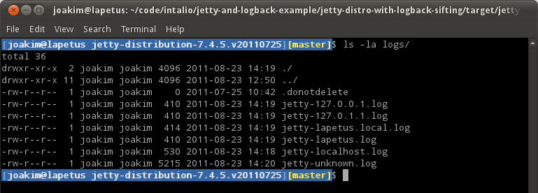

Jetty/Tutorial/Sifting Logs with Logback
Contents
Introduction
This page describes how to create log files at the server level and name them based on an arbitrary context. You do this with SLF4J + Logback + Jetty Webapp Logging in the mix. Find example projects for this feature at github:
https://github.com/jetty-project/jetty-and-logback-example
Modules
- /jetty-distro-with-logback-basic/
- Configures the jetty distribution with logback enabled at the server level with an example logback configuration.
- /jetty-distro-with-logback-sifting/
- Configures the jetty distribution with logback, centralized webapp logging, an MDC handler, and a sample logback configuration that performs sifting based on the incoming Host header on the requests.
- /jetty-slf4j-mdc-handler/
- Provides the SLF4J MDC key/value pairs that Jetty needs to perform the sample sifting.
- /jetty-slf4j-test-webapp/
- A sample webapp+servlet that accepts arbitrary values on a form POST and logs them via SLF4J, so that you can see the results of this example.
Details
Configuring Basic Logback for Jetty
To configure basic logback for Jetty:
- Unpack your Jetty 7.x or 8.x distribution zip of choice.
This example uses 7.4.5.v20110725. - Install the slf4j and logback jars into
${jetty.home}/lib/logging/. - Configure ${jetty.home}/start.ini to add the lib/logging directory into the server classpath.
=========================================================== # Start classpath OPTIONS. # These control what classes are on the classpath # for a full listing do # java -jar start.jar --list-options #----------------------------------------------------------- OPTIONS=Server,resources,logging,websocket,ext #----------------------------------------------------------- #=========================================================== # Configuration files. # For a full list of available configuration files do # java -jar start.jar --help #----------------------------------------------------------- etc/jetty.xml # etc/jetty-requestlog.xml etc/jetty-deploy.xml etc/jetty-webapps.xml etc/jetty-contexts.xml etc/jetty-testrealm.xml #===========================================================
- Create a ${jetty.home}/resources/logback.xml file with the configuration you want.
<?xml version="1.0" encoding="UTF-8"?> <!-- Example LOGBACK Configuration File http://logback.qos.ch/manual/configuration.html --> <configuration> <appender name="STDOUT" class="ch.qos.logback.core.ConsoleAppender"> <!-- encoders are assigned the type ch.qos.logback.classic.encoder.PatternLayoutEncoder by default --> <encoder> <pattern>%d{HH:mm:ss.SSS} [%thread] %-5level %logger{36} - %msg%n</pattern> </encoder> </appender> <appender name="FILE" class="ch.qos.logback.core.rolling.RollingFileAppender"> <file>${jetty.home}/logs/jetty.log</file> <rollingPolicy class="ch.qos.logback.core.rolling.TimeBasedRollingPolicy"> <!-- daily rollover --> <fileNamePattern>jetty_%d{yyyy-MM-dd}.log</fileNamePattern> <!-- keep 30 days' worth of history --> <maxHistory>30</maxHistory> </rollingPolicy> <encoder> <pattern>%-4relative [%thread] %-5level %logger{35} - %msg%n</pattern> </encoder> </appender> <root level="info"> <appender-ref ref="STDOUT" /> <appender-ref ref="FILE" /> </root> </configuration>
That’s it, now you have (in the following order):
- Jetty configured to use SLF4J
(viaslf4j-api.jarin the classpath on Jetty startup). - SLF4J configured to use Logback
(vialogback-core.jarin the classpath at Jetty startup). - Logback configured to produce output to:
-
${jetty.home}/logs/jetty.log(with daily rolling). - and STDOUT console.
-
Now start Jetty.
$ java -jar start.jar
Notice that SLF4J handles the log events Jetty produces, while Logback writes those events to the STDOUT console and logs/jetty.log file.
Using Logback to Sift Logs via Hostname
Here is a more complex example:
- You have several virtual hosts, or a variety of DNS hostnames for the Jetty instance that is running.
- You want Jetty to capture the logging events your webapps produce into uniquely named log files according to the hostname that the request came in on.
This is possible with Logback, SLF4J and jetty WebappContextClassloader.
See the /jetty-distro-with-logback-sifting/ project example from the github project listed above for a buildable configuration of the following:
- Unpack your Jetty 7.x or 8.x distribution zip of choice. This example uses 7.4.5.v20110725.
- Install the slf4j and logback jars into
${jetty.home}/lib/logging/.- slf4j-api-1.6.1.jar
- logback-classic-0.9.29.jar
- logback-core-0.9.29.jar
- jetty-webapp-logging.jar (be sure you match your jetty version)
- jetty-slf4j-mdc-handler.jar -- from Github example project. Steps to compile to JAR
- Clone or download as ZIP and unpack somewhere
- Go to jetty-slf4j-mdc-handler/ subfolder
- Run mvn package (needs Maven, indeed)
- Get compiled JAR jetty-slf4j-mdc-handler-1.0-SNAPSHOT from jetty-slf4j-mdc-handler/target/.
- Configure ${jetty.home}/start.ini to add the
lib/loggingdirectory into the server classpath.
#=========================================================== # Start classpath OPTIONS. # These control what classes are on the classpath # for a full listing do # java -jar start.jar --list-options #----------------------------------------------------------- OPTIONS=Server,resources,logging,websocket,ext #----------------------------------------------------------- #=========================================================== # Configuration files. # For a full list of available configuration files do # java -jar start.jar --help #----------------------------------------------------------- etc/jetty.xml # etc/jetty-requestlog.xml etc/jetty-mdc-handler.xml etc/jetty-deploy.xml etc/jetty-webapps.xml etc/jetty-contexts.xml etc/jetty-webapp-logging.xml etc/jetty-testrealm.xml #===========================================================
The key entries here are the addition of the logging OPTION to load the classes in ${jetty.home}/lib/logging into the jetty server classpath, and the two new configuration files:
- etc/jetty-mdc-handler.xml
- Adds wraps the MDCHandler found in jetty-slf4j-mdc-handler around all of the handlers in Jetty Server.
- etc/jetty-webapp-logging.xml
- Adds a DeploymentManager lifecycle handler that configures the created Webapp’s Classloaders to deny acccess to any webapp (WAR) file contained logger implementations in favor of using the ones that exist on the server classpath. This is a concept known as Centralized Webapp Logging.
- Create a ${jetty.home}/resources/logback.xml file with the configuration you want.
<?xml version="1.0" encoding="UTF-8"?> <!-- Example LOGBACK Configuration File http://logback.qos.ch/manual/configuration.html --> <configuration> <appender name="STDOUT" class="ch.qos.logback.core.ConsoleAppender"> <!-- encoders are assigned the type ch.qos.logback.classic.encoder.PatternLayoutEncoder by default --> <encoder> <pattern>%d{HH:mm:ss.SSS} [%thread] %-5level %logger{36} - %msg%n</pattern> </encoder> </appender> <appender name="SIFT" class="ch.qos.logback.classic.sift.SiftingAppender"> <!-- in the absence of the class attribute, it is assumed that the desired discriminator type is ch.qos.logback.classic.sift.MDCBasedDiscriminator --> <discriminator> <key>host</key> <defaultValue>unknown</defaultValue> </discriminator> <sift> <appender name="FILE-${host}" class="ch.qos.logback.core.rolling.RollingFileAppender"> <file>${jetty.home}/logs/jetty-${host}.log</file> <rollingPolicy class="ch.qos.logback.core.rolling.TimeBasedRollingPolicy"> <!-- daily rollover --> <fileNamePattern>jetty-${host}_%d{yyyy-MM-dd}.log</fileNamePattern> <!-- keep 30 days' worth of history --> <maxHistory>30</maxHistory> </rollingPolicy> <encoder> <pattern>%-4relative [%thread] %-5level %logger{35} - %msg%n</pattern> </encoder> </appender> </sift> </appender> <root level="INFO"> <appender-ref ref="STDOUT" /> <appender-ref ref="SIFT" /> </root> </configuration>
That’s it, now you have (in the following order):
- Jetty configured to use SLF4J
(viaslf4j-api.jarin the classpath on Jetty startup). - Jetty is configured to modify incoming Webapp’s classloaders to favor server logging classes over the webapp’s own logging classes.
(Centralized Webapp Logging). - SLF4J configured to use Logback
(vialogback-core.jarin the classpath at Jetty startup). - Logback configured to produce output to:
-
${jetty.home}/logs/jetty-${host}.log(with daily rolling) and using “unknown” for log events that don’t originate from a request. - and STDOUT console.
-
Now start Jetty.
$ java -jar start.jar
{kind=link}
- If you have started the distribution the example configuration produces, you can use the provided /slf4j-tests/ context to experiment with this. Use the default URL of http://localhost:8080/slf4j-tests/.
{kind=link}
- Now try a few more URLs for the same Jetty instance.
- http://127.0.0.1:8080/slf4j-tests/
- http://127.0.1.1:8080/slf4j-tests/
- http://your development machine:8080/slf4j-tests/ (lapetus is the name of our development machine)
- http://your development machine.local:8080/slf4j-tests/
You should now have a few different log files in your ${jetty.home}/logs/ directory.

{kind=link}